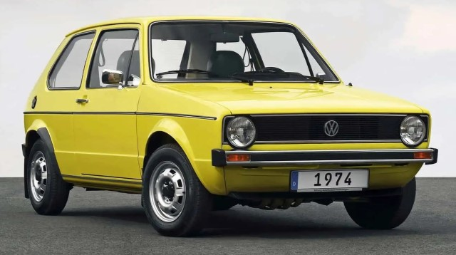

Volkswagen Golf I. 1974

Pongámonos en situación. Tras la crisis del petróleo, la gente demandaba vehículos de poco consumo. Volkswagen se veía ante el reto de sustituir a todo un icono, el Volkswagen Beetle, y apostó por un cambio mecánico drástico: motor frontal dispuesto transversalmente y tracción delantera, en lugar de propulsor y tracción traseras del Beetle. Diseñado por Giorgetto Giugiaro, supuso el auge de las carrocerías hatchback, (compactos de dos volúmenes, con portón trasero). Disponible con tres o cinco puertas, pronto se unirían a el coches como el Ford Escort, Fiat 128, Opel Kadett… Todos exitosos, pero ninguno como el Golf. Apenas dos años después, ya se habían fabricado un millón de unidades.
Su motor más básico era un 1.1 de gasolina de 50 CV. También había un 1.3 de 60 CV y un 1.5 de 70 CV. Entre los diésel, uno de los más demandados era el 1.5 de 50 CV. En 1976, se producía el lanzamiento del primer Golf GTI, la icónica versión deportiva con la que Volkswagen introducía el dinamismo en el segmento compacto, con un motor gasolina 1.6 de 110 CV. Desde 1982 fue un 1.8 de 112 CV y ese mismo año llegó el Golf GTD, intentando repetir el fenómeno GTI con un motor turbodiésel).
El primer Golf Cabrio, por su parte, llegaba en 1979, fabricado por Karmann. En otros mercados se llamó Rabbit (como en EE.UU). o Caribe, en México. Esta primera generación del Golf se siguió fabricando hasta el 2010 en Sudáfrica, con muy pocos cambios.